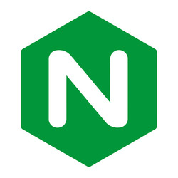

Ubuntu Server is a Linux distribution designed for servers. It’s open-source, stable, and commonly used for hosting websites, cloud services, and more.
A web server is software that delivers web pages to users by handling HTTP requests from clients like browsers.
Apache is a widely used open-source web server application. It’s known for its flexibility, supports various modules, and runs on multiple operating systems. It’s part of the Apache Software Foundation and has been a go-to choice for serving websites for decades.
| Application Name | License | Project's Website |
|---|---|---|
| Apache HTTP Server | Apache License 2.0 | Apache |
| Nginx | 2-clause BSD license | Nginx |
| Lighttpd | BSD license | Lighttpd |
As stated above, Apache is one of the most common web servers. It’s reliable, customizable, and supports features like URL rewriting, load balancing, and virtual hosts.

Nginx is a lightweight and super fast web server that is often used as a reverse proxy or load balancer in high-traffic environments.
Lighttpd is designed to be secure, fast, and lightweight. It’s great for serving static content and works well on low-resource systems.
Virtualization is the process of running multiple operating systems on a single physical machine by using software to simulate hardware environments.
VirtualBox is a free and open-source virtualization tool developed by Oracle. It lets users run different OSes in virtual machines on their computer.
A virtual machine (VM) is a software-based emulation of a physical computer. It runs an OS and applications like a normal computer but inside a host system.

Ubuntu Server is a Linux distribution designed for servers. It’s open-source, stable, and commonly used for hosting websites, cloud services, and more.
A firewall is a security system that controls incoming and outgoing network traffic. It helps block unauthorized access while allowing legitimate communication.
SSH (Secure Shell) is a protocol used to securely connect to remote machines. It encrypts all data, making remote administration safe over networks.
Systemd is the default system and service manager for many Linux distributions. It handles boot processes, service management, and system logging.
Systemctl is the command-line tool used to interact with systemd. You can start, stop, enable, or check the status of services with it.
Virtual hosts allow a web server to host multiple websites on a single machine. Each site can have its own domain and settings, even if they share the same IP.
A log file records events that happen on a system or application. Web server logs, for example, keep track of page requests, errors, and other activity.